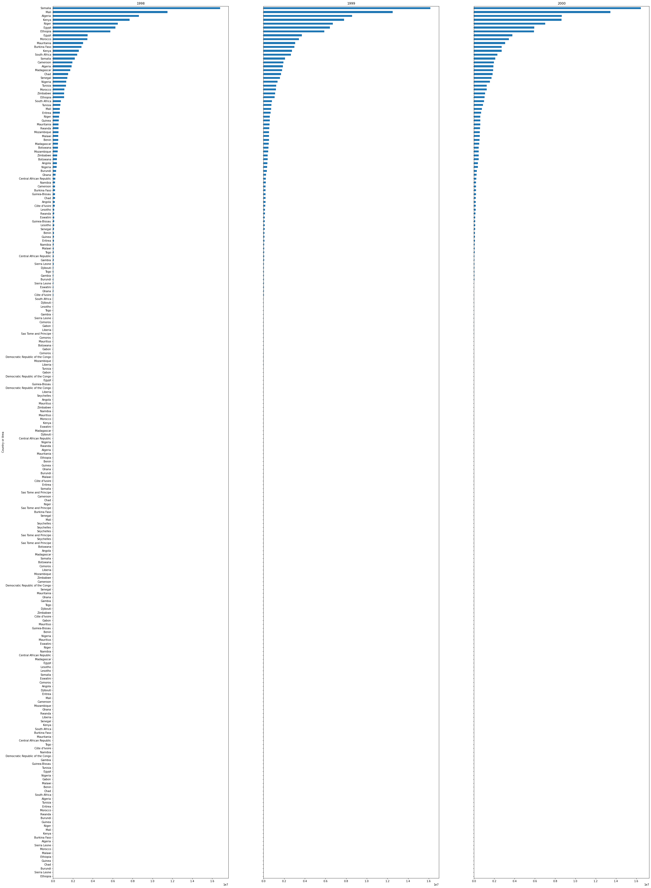
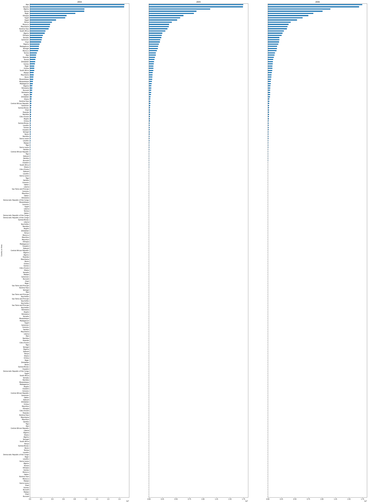

The milk consumption total representation in Africa.
THE BAR PLOTS DISPLAYS THE COMBINED STATISTICS OF THE TOTAL MILK CONSUMPTION FROM 2009 TO 2018


The milk consumption total representation in Africa.
THE BAR PLOTS DISPLAYS THE COMBINED STATISTICS OF THE TOTAL MILK CONSUMPTION FROM 2009 TO 2018
The line graphs show below the different measures of dispersion(as indicated by the legend), for the observation values in the bar plots above the first plot being the Mean,followed by the Standard Deviation, Semi-interquartile range, Interquartile range, Range